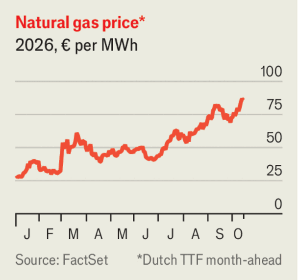

Business
Oct 15th 2026
The IMF’s latest economic outlook found that the global economy had displayed resilience in the face of several shocks, and estimated that global GDP would grow by 3.1% this year, up slightly from a previous prediction in July. It also noted that borrowing costs have risen sharply in rich countries as “fiscal buffers” are used to absorb economic shocks. “Fiscal policy must be restrained,” it said. Higher public borrowing has helped propel a sell-off in bond markets. The fund also downgraded Saudi Arabia’s GDP growth by five percentage points and now thinks the kingdom’s economy will shrink by 3.3% this year.

America’s annual inflation rate jumped to 3.7% in September, from 3.4% in August, driven by the rebound in fuel prices. Higher energy prices are also on the cards for Europe, where gas futures have risen steeply since the start of the Iran war and are now trading above €87 ($97) per megawatt hour.
China’s export boom continued apace in September, as the value of goods sent abroad rose by 36%, year on year, smashing most forecasts. Exports to America were up by almost 40%. China’s trade surplus for the first nine months of 2026 was $938bn, on track to pass last year’s record $1.2trn. China, meanwhile, agreed to curb its exports of hybrid cars to the EU in an effort to head off tariffs on the vehicles.
BlackRock’s research arm recommended increasing holdings of American Treasuries (relative to a baseline allocation) as “Yields have reset toward our long-held higher-rates view, and we want to lock in some attractive income.” It is also now more cautious on US equities, downgrading them to a neutral investment holding “to manage potential volatility around the AI buildout”. Meanwhile, Hock Tan, Broadcom’s chief executive, warned that “A lot of investors have no clue what they are investing in”, comparing their bets on AI to a casino.
South Korea’s benchmark stock index, the KOSPI, fell sharply amid a sell-off in tech shares, triggering the tenth circuit-breaker this year. Amid the jitters, TSMC, which makes most of the world’s advanced chips, reported a 69% increase in quarterly profit, year on year, of $23.6bn and forecast more bumper sales for this quarter. And ASML said orders for its ultraviolet lithography machines, which are used to make high-end chips for AI, were already stretching into 2029 and 2030 and it was looking again to increase capacity.
Another week, another alert about rogue AI. Anthropic warned that small AI models “may be months away” from being able to infiltrate smart household-appliances connected to the internet, such as TVs and ovens. Such incidents would be “challenging to shut down”, it said. The models could also “figure out” how devices work (some experts think Anthropic’s findings are exaggerated). Anthropic also revealed that its AI agents had accessed government websites. Press reports suggested this included filling out visa forms at the State Department and giving a false murder tip to Philadelphia police.
A cyber-attack hit French supermarkets by tapping into their systems and increasing the temperature settings on refrigerators, melting food and damaging equipment. Carrefour and Coopérative U were among those affected. Supermarkets allow engineers to control heating and cooling over the internet. It is thought the attackers found a vulnerability in old firmware.
America’s big banks reported a mixed bag of earnings. JPMorgan Chase’s net profit, $15.3bn for the third quarter, fell short of analysts’ consensus for the first time in three years. Bank of America also missed its estimate and it booked a $1.2bn fine imposed by the Treasury for failing to adequately report suspected money-laundering. Goldman Sachs’s profit of $5.3bn beat forecasts, however.
The share prices of America’s big wireless providers, such as Verizon and T-Mobile, were left reeling after SpaceX announced that it had acquired a portfolio of licences in low-band spectrum, airwaves that are used for mobile coverage. SpaceX has indicated it wants to compete for retail mobile contracts.
Bumble, an online dating service, agreed to be taken over by a holding company in a $1.3bn buy-out. Bumble is best known for ensuring that women made the first move, though it abandoned the policy in August after it found most women preferred men to take the lead. The allure of digital dating is waning and, as with other dating apps, Bumble has seen user engagement drop. Younger people, the biggest users of the apps, are particularly likely to be turning away from electronic hook-ups to seek romance the old-fashioned way.